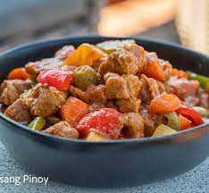

Pork Caldereta

What is Pork Caldereta?
Kalereta or caldereta is a goat meat stew from the Philippines. Variations of the dish use beef,chicken, or pork.
Commonly, the goat meat is stewed with vegetables and liver paste. Vegetables may include tomatoes, potatoes, olives, bell peppers, and hot peppers. Kaldereta sometimes includes tomato sauce.
Caldereta's name is derived from the Spanish word caldera meaning cauldron. The dish is similar to meat stews from the Iberian Peninsula and was brought to the Philippines by the Spaniards during their 300-year occupation of the Philippines.
It also has its similarities with afritada and mechado that it uses tomatoes, potatoes, carrots and bell peppers as its ingredients.
Kaldereta is served during special occasions, parties, and festivities.
Ingredients
- 1 kilo pork belly cut into cubes
- 1 1/2 cups tomato sauce
- 1/2 cup green olives or sliced pickles
- 2 pcs tomatoes chopped
- 1 pc large red onion chopped
- 3 cloves garlic minced
- 1 green bell pepper sliced
- 1 red bell pepper sliced
- 2 pcs red chili peppers sliced
- 2 pcs medium sized potatoes cut into cubes
- 2 pcs small carrots sliced
- 1 pork bouillon pork cube
- pcs bay leaves
- 1/2 cup liver spread
- 4 cups water
- 3 Tbsp. cooking oil
- 1 Tbsp. patis or adjust to suit your taste
- pepper to taste
Cooking Steps
- In a medium size wok, heat oil and saute garlic until fragrant. Then add onions and stir until soft.
- Add in tomatoes and stir cook until it becomes soft and the oil turns to orange in color.
- Then add the pork belly and saute for about 4 minutes or until the pork turns to brown.
- Pour in water and add peppercorns then simmer in medium heat for about 30 minutes and cover.
- Add the patis, liver spread, and pork cubes. Mix until the liver spread is well combined with the liquid.
- Add the tomato sauce and bay leaves. Mix again to combine. Then cover and simmer for about 20 minutes more.
- Then add carrots, potatoes, olives and chili peppers. Mix and cover then simmer for 7 minutes.
- And for the finale, add the in the bell peppers, cover and simmer again for 3 minutes.
- Serve hot with steamed rice or fried rice.